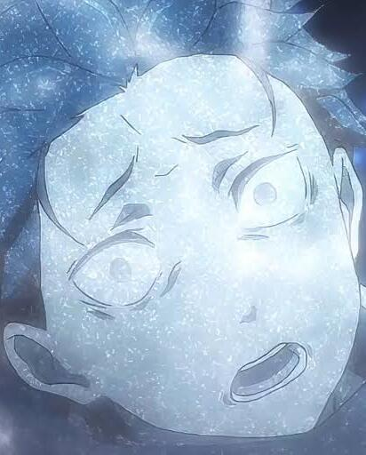

First Season
Subaru Natsuki enters the world of Re:Zero burdened by the toxic entitlement and delusions of grandeur typical of a shut-in who assumes he is the pre-ordained hero of an isekai fantasy. Throughout the first half of Season 1, his cringe-inducing behavior stems from a fragile ego masked by unearned bravado; he views Emilia not as an individual with her own agency, but as a narrative reward, using his grueling death loops to justify a possessive hero complex. This embarrassing lack of self-awareness reaches its low point during the Royal Selection assembly, where he throws a childish temper tantrum, insults the royal court, and falsely proclaims himself Emilia's knight despite lacking any real discipline, skill, or humility. His desperate need for validation, inability to read a room, and refusal to acknowledge his own incompetence make his early arc painful to watch, serving as a raw, intentional study of emotional insecurity before he finally hits rock bottom and confronts his flaws.

Second Season
In Season 2, Subaru’s pathetic traits shift from the toxic ego of Season 1 into a deeply self-destructive martyr complex, revealing a whole new rock bottom. Traumatized by constant mortality and desperate to salvage every impossible scenario in the Sanctuary, he degrades his own life into a cheap, disposable resource, measuring his value purely by how much agony he can endure through Return by Death. This twisted mindset manifests as a stubborn refusal to rely on others, masking a profound self-loathing under the guise of selfless sacrifice. His low point arrives when he eagerly prepares to sign Echidna’s contract, fully willing to prostitute his own sanity and die thousands of times over just to avoid relying on his companions. It takes Otto literally punching sense into him to expose the ugly truth: treating himself like a disposable pawn wasn't noble heroism, but an emotionally cowardly excuse to avoid genuine vulnerability. Season 2 proves that even after ditching his childish entitlement, Subaru’s lingering belief that he was only useful when dying made him his own absolute worst enemy.

Third Season
In Season 3, Subaru's residual flaw shifts into crippling imposter syndrome, where his pathetic moments stem from the overwhelming dread of having to live up to the "hero" label he previously craved. Elevated to legendary status after his past triumphs, he is thrown into the chaos of Priestella acutely aware of how weak, fragile, and utterly outclassed he remains alongside demigods like Reinhard or terrifying monstrosities like Regulus. His low points manifest as suffocating panic attacks and internal paralysis; when forced to address the terrified city, he initially spirals into pathetic self-doubt, horrified that an entire populace is placing their faith in a guy whose primary ability is dying repeatedly. Even though he ultimately steps up, Season 3 highlights the embarrassing contrast between his revered public image and his internal reality—a terrified, out-of-his-depth teenager desperately trying not to break under the absurd weight of everyone else's expectations.